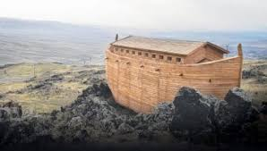
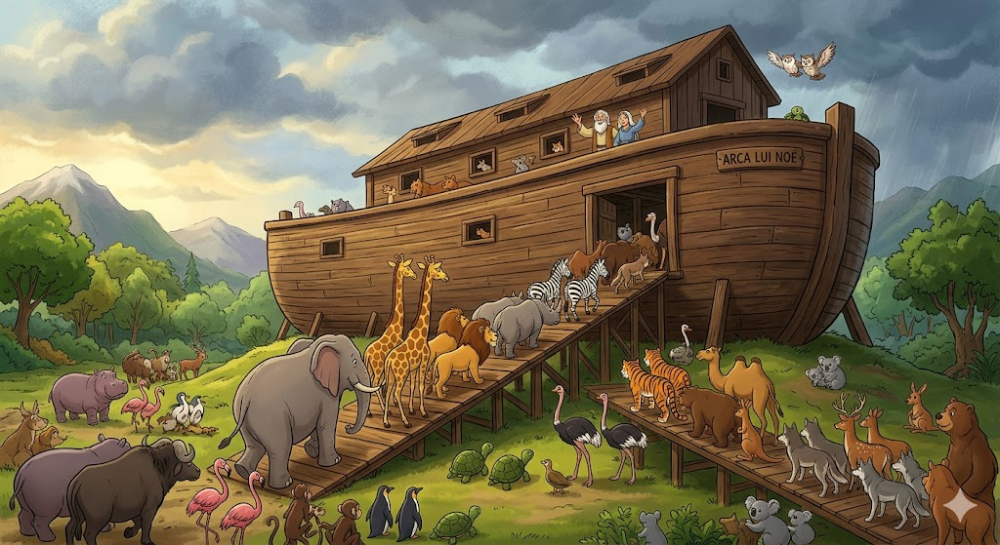
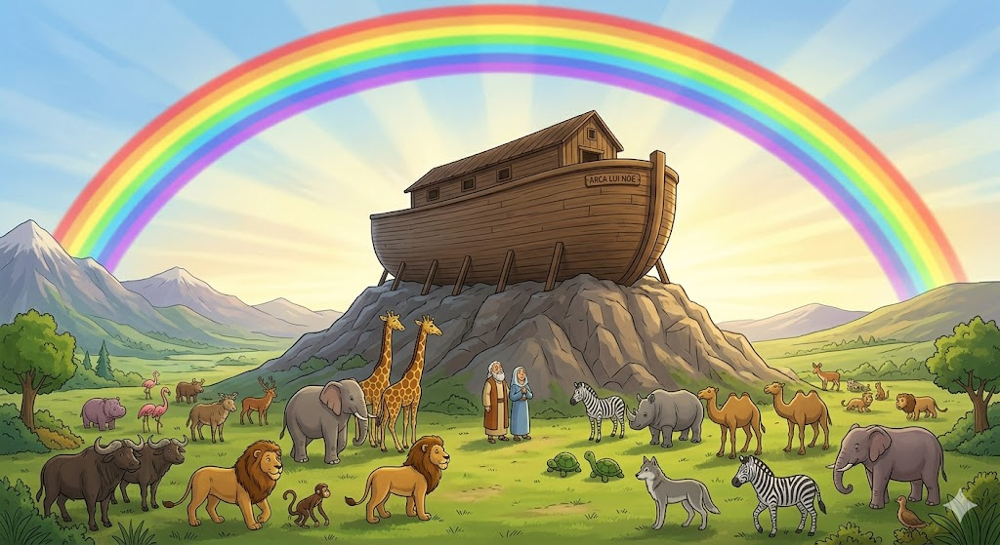

Oamenii de pe pământ uitaseră de bunătatea lui Dumnezeu, dar Noe era diferit. El era un om bun care asculta mereu de Creatorul său.
1. Construcția Uriașă
Dumnezeu i-a spus lui Noe să construiască o corabie imensă (arca), chiar dacă nu plouase niciodată atât de tare. Noe a ascultat și a lucrat mulți ani la ea.

2. Oaspeții cu Blană și Aripi
Când arca a fost gata, animalele au venit două câte două: elefanți greoi, lei curajoși și păsări mici. Toți au fost în siguranță înăuntru când a început marea ploaie.

3. Semnul Păcii
După ce ploaia s-a oprit, Dumnezeu a pus pe cer primul curcubeu. Acesta era semnul Lui că va avea mereu grijă de noi și că nu va mai fi niciodată un potop atât de mare.

„Curcubeul Meu, pe care l-am pus în nori, el va sluji ca semn al legământului dintre Mine și pământ.”
- Geneza 9:13
🌈 Știai că?
Arca lui Noe a fost la fel de lungă cât un stadion și jumătate de fotbal! Era atât de mare încât putea adăposti peste 125.000 de animale de mărimea unei oi.